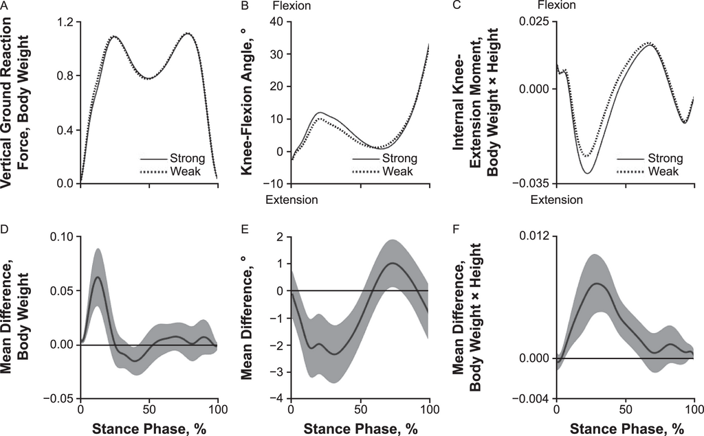

Research Statement
My research interest lies in understanding how to optimize outcomes for athletes returning to play following an anterior cruciate ligament reconstruction. Specifically, I aim to investigate whether successfully achieving quadriceps strength sufficiency (≥3.0 N·m·kg⁻¹) is associated with return to normalized gait biomechanics 12 months post-reconstruction. These findings could support development of rehabilitation criteria that prioritize both restoration of quadriceps strength and movement quality, thereby reducing risk of reinjury and improving long-term joint health in athletes returning to sports post-ACL injury.

Figure 1. Gait biomechanics differences between individuals with strong (≥3.0 N·m·kg⁻¹) and weak quadriceps following ACL reconstruction. (Adapted from Pietrosimone et al., 2021)
Reference:
1. Pietrosimone B, Davis-Wilson HC, Seeley MK, Johnston C, Spang JT, Creighton RA, Kamath GM, Blackburn JT. Gait Biomechanics in Individuals Meeting Sufficient Quadriceps Strength Cutoffs After Anterior Cruciate Ligament Reconstruction. J Athl Train. 2021 Sep 1;56(9):960-966.